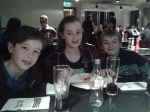
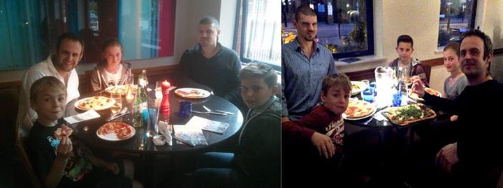

3rd annual 'Founder member' pizza night
Three years ago, a small ritual was born to thank the few initial dojo members for helping us to grow. The occasion is always welcomed and, more importantly, the table now represents over 40 years of karate experience.

Henry joined at age 4. He’s now 9 and Captain of house ‘Fire’
Liam joined at 8 and is now 12 and Captain of house ‘Water
Jane began when she was 9. She is now 13 and children’s chief instructor!
Rik Hemsley joined as an adult – a purple belt from another school. He’s now an instructor and the school’s chairman
And of course…
James Martin. 5 years ago teaching the first week with only 3 members. Now teaching over 100. Numbers still growing!
And here’s the last couple of years:

Growth of this school has always been matched with new opportunities and events; taking your money and making it work harder. I am proud of our fair prices and supportive members.
Due to long serving members still with us, hopefully the table for the 4th meeting will be bigger and the dojo wallet – smaller!